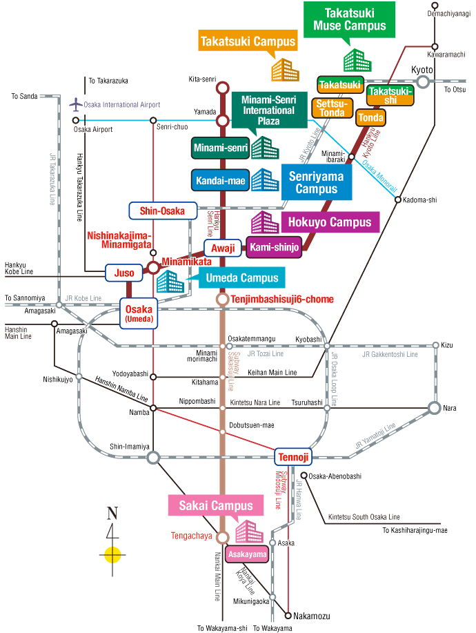

Please use public transportation to visit Kansai University. ICBL 2018 is going to hold on 2/F, Centenary Memorial Hall, Senriyama Campus, Kansai University. Please note that Kansai University has five campuses. You may find out more information about Senriyama Campus by visiting http://www.kansai-u.ac.jp/English/about_ku/location.html.


Taking Limousine Bus and trains (Total costs about ¥1,800 one way, about 1h30min)
- Exit the arrival lobby on the first floor of the airport.
- Purchase the ticket (¥1,550) for Limousine Bus (Bound for Osaka station, Chayamachi, Shin-Umeda city, etc).
- Take the Limousine Bus #5 (Bound for Osaka station, Chayamachi, Shin-Umeda city, etc) and get off at "Shin-Hankyu Hotel" (About 1 hour).
- Please go to Hankyu Umeda Station, and take a train bound for Kita Senri of Hankyu Senri Line and get off at the KANDAIMAE station. (about 20 min/It costs ¥220)
- Central Exit on the 2nd floor is the nearest exit from "Shin-Hankyu Hotel".
Taking Nankai Electric Railway (Total costs about ¥1,400 one way, about 1h30min)
- Exit the 2nd floor, then follow the sign "Kansai Airport Station" of Nankai Line through walk way.
- Please take the Airport Express (bound for Nanba) to Tengachaya station. (About 50min / It costs ¥920)
- Transfer to bound for Kita-Senri of Sakaisuji Line of Osaka city subway then go to KANDAIMAE station station from Tengachaya. (It costs ¥470 to Kandai-mae)
NOTE: It's very expensive to get to Kansai University from Kansai International Airport or the nearest station by taxi. (About 1h 10min / ¥25,000)